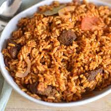

Jollof Rice

Description
Jollof rice.
A classic Nigerian dish traditionally served at parties and outgoings. Easy to make and too tasty. You can't go wrong.
Ingredients
- 750g Long Grain Parboiled Rice
- 500g Plum Tomatoes
- 100g Tomato Paste
- Vegetable Oil
- 2 Large Onions
- 3 Knorr Cubes
- 2 Teaspoons Thyme
- 2 Teaspoons Curry Powder
- 2 Cups of Chicken Stock
- Chicken (Whole Chicken, cut up into pieces, or drumsticks or chicken breast)
- Salt and Pepper
Steps
- Wash and blend the fresh plum tomatoes. (Remove seeds to make mixture more smooth).
- Mix tomato paste with water to get a softer consistency and cut 1 onion into small pieces.
- Pour fresh tomato blend into a pot and cook at high heat until almost all the water has dried.
- Add vegetable oil, chopped onions and tomato paste to pot. Stir well.
- Fry at low heat and stir at short intervals until the oil has separated from the tomato puree.
- After all the water has dried, pour out the excess vegetable oil.
- Wash, cut the chicken and cook with thyme, knorr cubes and an onion (chopped).
- Parboil the rice, rinse parboiled rice and put in a sieve to drain.
- Pour the chicken stock and tomato stew into a pot and leave to boil.
- Add drained parboiled rice, curry powder, salt and pepper.
- Ensure that the water level is the same level as the rice.
- Cover the pot and leave to cook on low to medium heat.
- The rice is done when the water is dry, taste to confirm. If the rice needs more time to cook, add more water and reduce the heat to prevent burning
- Dig in and enjoy!